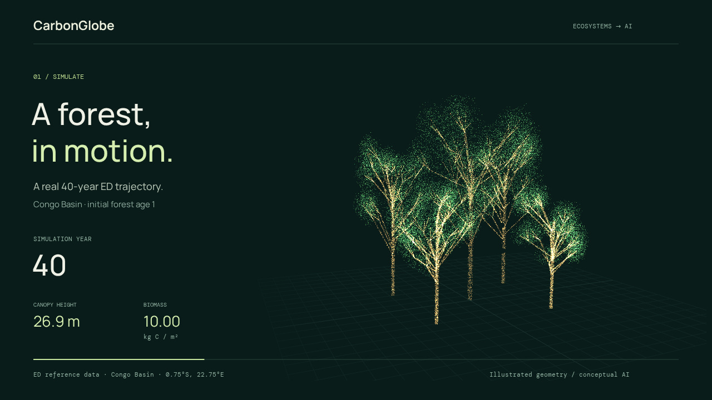
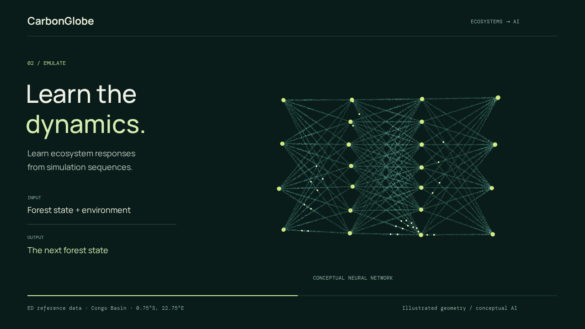
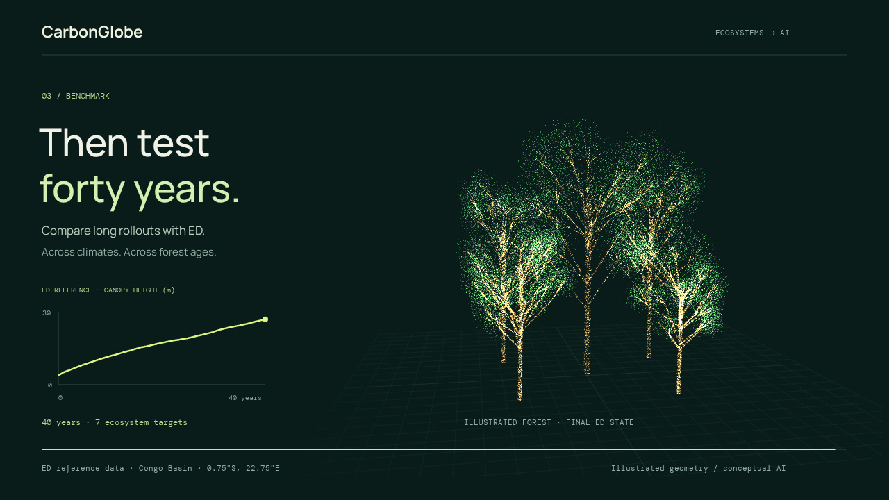

AN ECOSYSTEM, LEARNED MOTION CONCEPT
A forest. A model.
Forty years.
Teach AI the dynamics
of a living planet.
Height and biomass use real annual ED values, interpolated between years for motion: Congo Basin (−0.75°, 22.75°), initial forest age 1, simulation years 0–40. Trees are illustrated; the network is conceptual, not a trained model prediction. Source details ↗
Download MP4
Change begins
with a state.
A starting forest, an environment, and the process-based ED model. Together, they produce a reference for how an ecosystem changes.
SIMULATED DYNAMICS · ILLUSTRATED STRUCTURE
Learn the
transition.
Train an AI emulator to map the current forest and environmental drivers to the next state. CarbonGlobe supplies the ML-ready sequences.
FOREST + ENVIRONMENT → NEXT FOREST STATE
One step.
Then forty.
Feed each predicted state into the next step. Benchmark the full rollout against ED to test whether learned dynamics hold up over decades.
A FOUNDATION FOR ECOSYSTEM DIGITAL TWINS